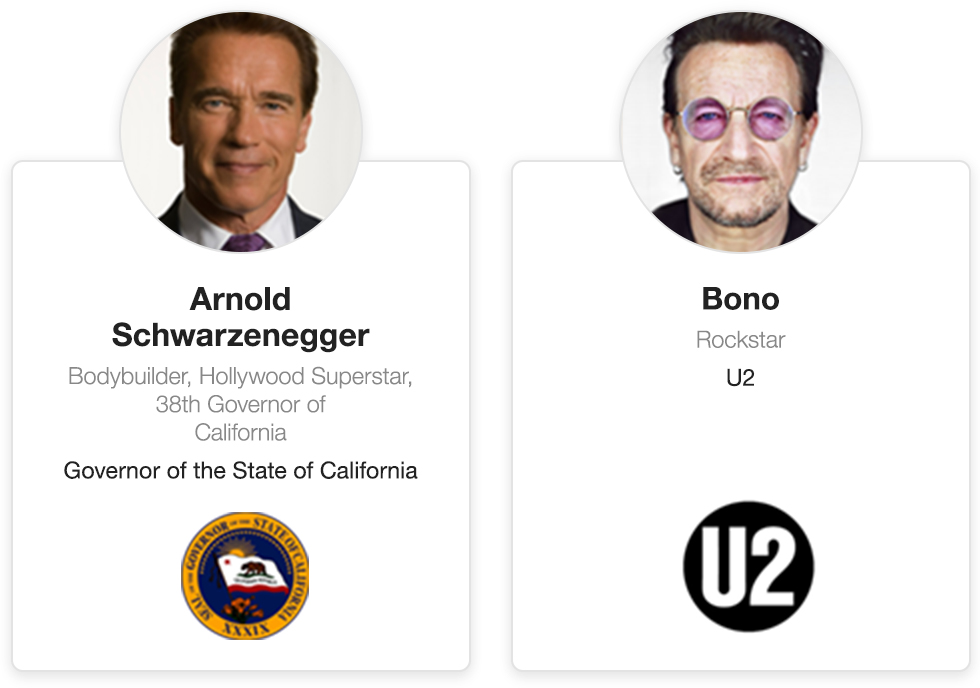
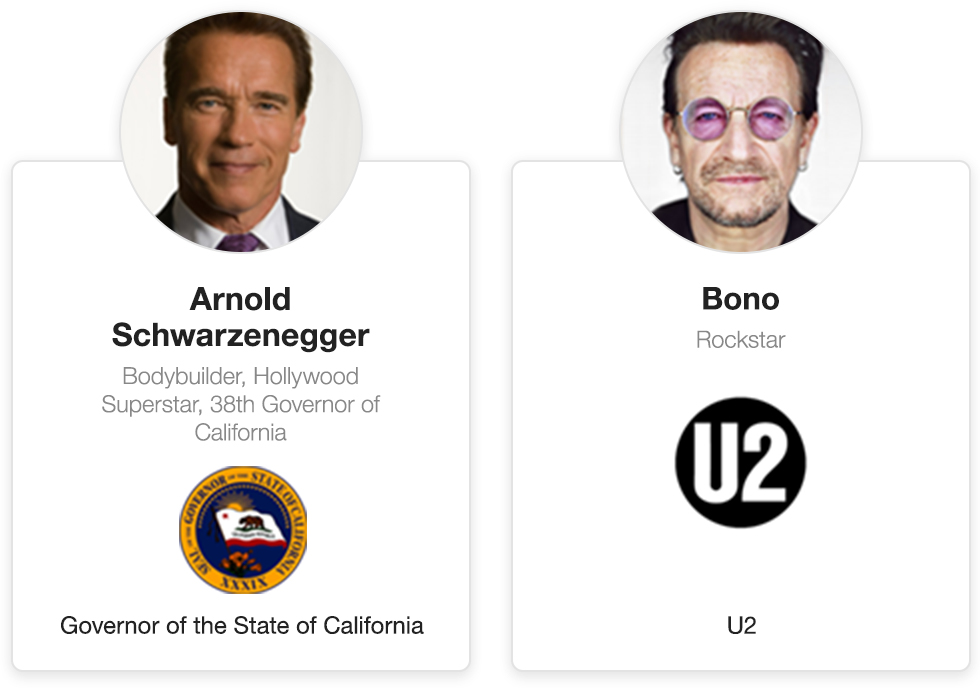

Initial thoughts
So my first thoughts were that a single track event was definitely a lot simpler to do than a multi-track agenda. The multi-track agenda has alot more parts that must fit together perfectly
the two types of agenda
Single Track

The Single track agenda is linear, There is only one starting presentation and only one finishing presentaion
Multi Track

The Multi track is a totlally differnt kettle of fish and will definately be more complicated
Time accurate cards
One of the issues that I came across first was that these presentations didn’t always start or finish at the same time so this would have to be clear to the user.
Not Time Accurate

Problem
This could easily lead a user who was browsing through the agenda to believe that all these presentaions were the same length of time
Time Accurate

Solution
This was a lot was easier for users to see the difference between the lengths of agenda
Mind the Gaps
The vertical space between the presentations has to be taken into account, It has to be included as part of the presentation height otherwise it mucks up the time accuracy if there are different amount of presentations on each track
Gaps independant from cards

Problem
It looks like the 2nd Track finishes 5 mins earlier the more this happens the bigger the gap gets
Gaps incorporated into cards

Solution
By including the gap within the presentation card everything starts and finishes where it should
The Trouble With Being Time accurate
Every event has a registration period of around 1.5 hrs where delegates can come in and register then have breakfast, and at the end of day 1 their was a networking drinks that lasts potentially 2 hrs. The issue with these is that on a time accurate agenda takes up a lot of space, and looks like a delegate is paying for a day where the majority is registration or network drinks
Big Breakfast

Problem
Showing a time accurate breakfast/registration really shows how big it is compared to a presentation
Hiding how big breakfast was

Solution
Heads & Tails style slot
This alternate time slot is used to hide the amount of room an accurate timed registration or networking drinks will take up. It will only work at the start or end of a day. It is the only part of a multi track agenda that isnt time accurate
Some time there just isn’t enough room
When their is enough room to show a multiple tracks next to each other, as its alot easier to understand and plan a day, However when their isnt enough room to show tracks next to each other we revert back to the single track view with a tab down the left hand side to select which track the user wants
Desktop

This displays all the presentaions in a way that is easy to plan, however it doesnt fit on smaller screens
Tablet

Now there isnt enough room to display the presentations side by side. The agenda now turns into the single track view. The single track view display is more like the single track event but witha tab system to change which track is displaying
Mobile

The tab now becomes a dropdown for selecting which track is displaying
Schwarzenegger Vs Bono
I wanted to test how a large speaker name, job title & company sits next to the opposite a short name, job title and company. Enter Arnie & Bono
Logo at the bottom
Problem
The Logo at the bottom of the card makes the size of the gap more noticable
Text Logo Sandwich
 Solution
The Logo being put between the text lets the space be spread more evenly